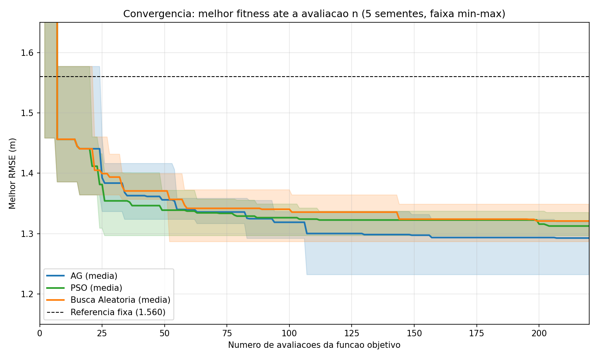
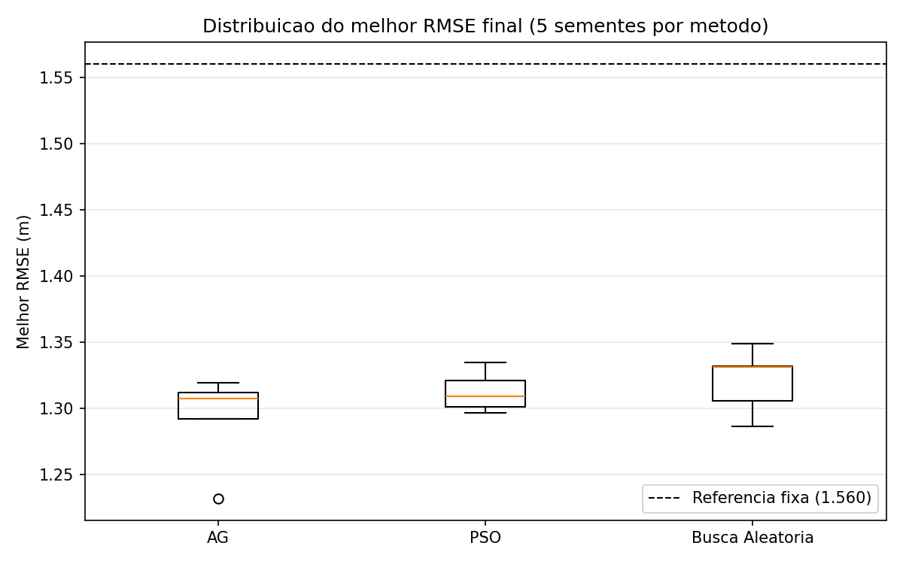
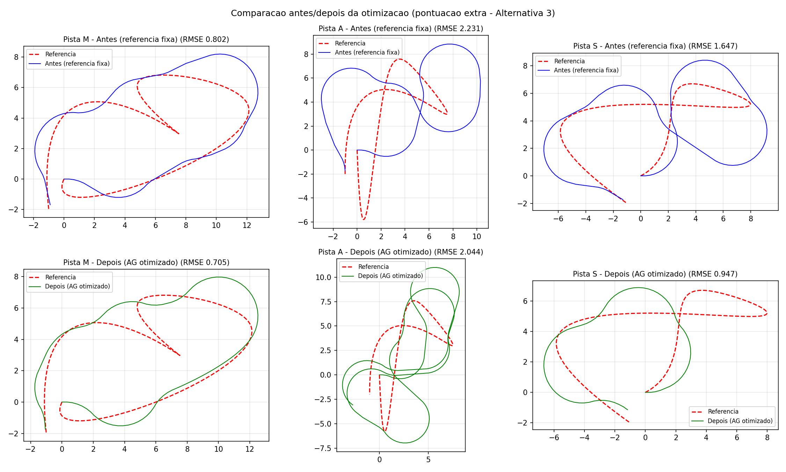

Parte 2 — IA Evolutiva e Computação Bioinspirada · Opção 1: Pesquisa Científica
Replicação experimental de Mancilla et al., Symmetry 2022, 14, 202
Inteligência Artificial e Computacional (0700M8) — CESUPA · Prof. Daniel Leal Souza
Turma: <PREENCHER> · Equipe: <PREENCHER: integrantes>
Repositório: github.com/brenda24070071-dotcom/fuzzy-ag-path-tracking-cesupa — Parte 2 na pasta parte2-evolutiva/ (Parte 1 na raiz)
Artigo-base (2022, indexado — dentro da janela de 7 anos): Mancilla, García-Valdez, Castillo & Merelo-Guervós. Optimal Fuzzy Controller Design for Autonomous Robot Path Tracking Using Population-Based Metaheuristics. Symmetry 14(2), 202. DOI 10.3390/sym14020202.
Justificativa da escolha: metodologia clara e replicável; problema realista de robótica; une as duas partes da disciplina.
| Elemento | Definição |
|---|---|
| Variáveis de decisão | p ∈ [0,1]^10 — larguras, centros e rampas das MFs das 2 entradas do controlador (5 parâmetros por variável) |
| Espaço de busca | Hipercubo contínuo [0,1]10 (parâmetros normalizados) |
| Função objetivo | RMSE médio do erro lateral em 3 pistas (M, A, S) — minimização |
| Restrições | Caixa [0,1]10 imposta por clip nos três métodos |
| Factibilidade | Penalidade +2000 se o robô não completa a pista; 5000 se a inferência falha |
| Métricas | Melhor / pior / média / desvio-padrão (5 sementes); convergência por avaliação; tempo; nº de avaliações |
Avaliação de um candidato: constrói o controlador Mamdani com os 10 parâmetros → simula o robô (cinemática de bicicleta, Euler 0,1 s) nas 3 pistas → RMSE médio do erro lateral.
| Componente | Escolha |
|---|---|
| Representação | vetor real, 10 genes em [0,1] |
| População | 20 (inicialização uniforme) |
| Seleção | torneio de 3 |
| Cruzamento | aritmético por gene, taxa 0,7 |
| Mutação | gaussiana σ=0,2, taxa 0,3/gene |
| Elitismo | 2 melhores preservados |
| Parada | 10 gerações = 220 avaliações |
v ← w·v + c1·r1·(pbest−x) + c2·r2·(gbest−x)
x ← clip(x + v, 0, 1)
| Componente | Escolha |
|---|---|
| Enxame | 20 partículas |
| Coeficientes | w=0,7298; c1=c2=1,49618 (constrição de Clerc–Kennedy) |
| Limites | |v| ≤ 0,5; posição em [0,1] |
| Parada | 10 iterações = 220 avaliações |
AvaliadorFitness) que registra a curva de melhor-até-agora por avaliação — comparação justa por custo, não por "geração";resultados/.| Método | Melhor | Pior | Média | Desv. padrão | Tempo médio | Avaliações |
|---|---|---|---|---|---|---|
| AG | 1,2319 | 1,3193 | 1,2926 | 0,0354 | 6,0 s | 220 |
| PSO | 1,2966 | 1,3349 | 1,3126 | 0,0156 | 5,9 s | 220 |
| Busca Aleatória | 1,2866 | 1,3487 | 1,3208 | 0,0246 | 3,0 s | 220 |
| Referência fixa | 1,5601 | — | — | — | — | 1 |

Soluções factíveis surgem nas primeiras ~10 avaliações; o grosso do ganho até ~60; depois o AG segue melhorando (mutação + elitismo), o PSO estagna (enxame converge ao gbest) e a busca aleatória depende de sorte decrescente.

PSO: menor variância. AG: cauda boa (único a atingir 1,2319).

Otimização automática de parâmetros fuzzy: 1,5601 → 1,2319 m (−21,0%), menos sobressinal nas curvas.
Achado mais interessante (e honesto): a busca aleatória ficou a ~2% da média do AG. Causas: orçamento pequeno (220 avaliações), paisagem benigna na região central da parametrização e dimensionalidade moderada (10-D). A vantagem das metaheurísticas aparece na cauda da qualidade: nenhuma execução aleatória alcançou o 1,2319 do AG.
Claude Code (Anthropic): implementação do script experimental (núcleo reaproveitado da Parte 1),
rascunhos de documentação e revisão de coerência. Tudo revisado, executado e validado pela equipe — docs/declaracao_uso_ia.md.
[1] Mancilla et al., Symmetry 14(2):202, 2022 · [2] Holland, 1975 · [3] Kennedy & Eberhart, ICNN 1995 · [4] Clerc & Kennedy, IEEE TEC 6(1), 2002 · [5] Cordón et al., Genetic Fuzzy Systems, 2001 · [6] Bergstra & Bengio, JMLR 13, 2012 · [7] Mamdani & Assilian, IJMMS 7(1), 1975
Obrigado!